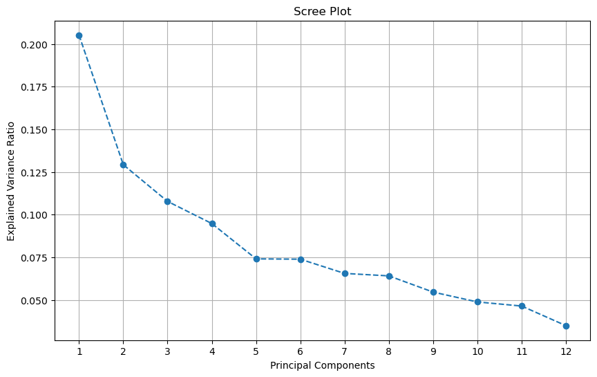

# Import required libraries
import sqlite3
import pandas as pd
# Step 1: Load the dataset
data_path = "Housing.csv"
data = pd.read_csv(data_path)
# Inspect the dataset
print("Dataset Columns:")
print(data.columns)
# Step 2: Create SQLite database and tables
conn = sqlite3.connect("housing.db")
cursor = conn.cursor()
# Table: PropertyDetails
cursor.execute("""
CREATE TABLE IF NOT EXISTS PropertyDetails (
Area REAL,
Bedrooms INTEGER,
Bathrooms INTEGER,
Stories INTEGER,
Parking INTEGER,
Price REAL
)
""")
# Table: Amenities
cursor.execute("""
CREATE TABLE IF NOT EXISTS Amenities (
RowID INTEGER PRIMARY KEY AUTOINCREMENT,
MainRoad BOOLEAN,
GuestRoom BOOLEAN,
Basement BOOLEAN,
HotWaterHeating BOOLEAN,
AirConditioning BOOLEAN,
PrefArea BOOLEAN
)
""")
# Table: Furnishing
cursor.execute("""
CREATE TABLE IF NOT EXISTS Furnishing (
RowID INTEGER PRIMARY KEY AUTOINCREMENT,
FurnishingStatus TEXT
)
""")
conn.commit()
print("Database schema created successfully.")
# Step 3: Populate the PropertyDetails table
property_details = data[['area', 'bedrooms', 'bathrooms', 'stories', 'parking', 'price']]
property_details.to_sql('PropertyDetails', conn, if_exists='replace', index=True) # Save with default rowid
# Step 4: Populate the Amenities table
amenities = data[['mainroad', 'guestroom', 'basement', 'hotwaterheating', 'airconditioning', 'prefarea']]
amenities.to_sql('Amenities', conn, if_exists='replace', index=True)
# Step 5: Populate the Furnishing table
furnishing = data[['furnishingstatus']]
furnishing.to_sql('Furnishing', conn, if_exists='replace', index=True)
print("Data populated successfully into normalized database.")
# Step 6: Verify the database with a joined query
query = """
SELECT pd.rowid AS PropertyID, pd.Area, pd.Bedrooms, pd.Bathrooms, pd.Stories, pd.Parking, pd.Price,
a.MainRoad, a.GuestRoom, a.Basement, a.HotWaterHeating, a.AirConditioning, a.PrefArea,
f.FurnishingStatus
FROM PropertyDetails pd
JOIN Amenities a ON pd.rowid = a.rowid
JOIN Furnishing f ON pd.rowid = f.rowid
"""
result = pd.read_sql_query(query, conn)
print("Joined Data:")
print(result.head())
# Step 7: Close the connection
conn.close()
---------------------------------------------------------------------------
FileNotFoundError Traceback (most recent call last)
Cell In[1], line 7
5 # Step 1: Load the dataset
6 data_path = "Housing.csv"
----> 7 data = pd.read_csv(data_path)
9 # Inspect the dataset
10 print("Dataset Columns:")
File /opt/anaconda3/lib/python3.12/site-packages/pandas/io/parsers/readers.py:1026, in read_csv(filepath_or_buffer, sep, delimiter, header, names, index_col, usecols, dtype, engine, converters, true_values, false_values, skipinitialspace, skiprows, skipfooter, nrows, na_values, keep_default_na, na_filter, verbose, skip_blank_lines, parse_dates, infer_datetime_format, keep_date_col, date_parser, date_format, dayfirst, cache_dates, iterator, chunksize, compression, thousands, decimal, lineterminator, quotechar, quoting, doublequote, escapechar, comment, encoding, encoding_errors, dialect, on_bad_lines, delim_whitespace, low_memory, memory_map, float_precision, storage_options, dtype_backend)
1013 kwds_defaults = _refine_defaults_read(
1014 dialect,
1015 delimiter,
(...)
1022 dtype_backend=dtype_backend,
1023 )
1024 kwds.update(kwds_defaults)
-> 1026 return _read(filepath_or_buffer, kwds)
File /opt/anaconda3/lib/python3.12/site-packages/pandas/io/parsers/readers.py:620, in _read(filepath_or_buffer, kwds)
617 _validate_names(kwds.get("names", None))
619 # Create the parser.
--> 620 parser = TextFileReader(filepath_or_buffer, **kwds)
622 if chunksize or iterator:
623 return parser
File /opt/anaconda3/lib/python3.12/site-packages/pandas/io/parsers/readers.py:1620, in TextFileReader.__init__(self, f, engine, **kwds)
1617 self.options["has_index_names"] = kwds["has_index_names"]
1619 self.handles: IOHandles | None = None
-> 1620 self._engine = self._make_engine(f, self.engine)
File /opt/anaconda3/lib/python3.12/site-packages/pandas/io/parsers/readers.py:1880, in TextFileReader._make_engine(self, f, engine)
1878 if "b" not in mode:
1879 mode += "b"
-> 1880 self.handles = get_handle(
1881 f,
1882 mode,
1883 encoding=self.options.get("encoding", None),
1884 compression=self.options.get("compression", None),
1885 memory_map=self.options.get("memory_map", False),
1886 is_text=is_text,
1887 errors=self.options.get("encoding_errors", "strict"),
1888 storage_options=self.options.get("storage_options", None),
1889 )
1890 assert self.handles is not None
1891 f = self.handles.handle
File /opt/anaconda3/lib/python3.12/site-packages/pandas/io/common.py:873, in get_handle(path_or_buf, mode, encoding, compression, memory_map, is_text, errors, storage_options)
868 elif isinstance(handle, str):
869 # Check whether the filename is to be opened in binary mode.
870 # Binary mode does not support 'encoding' and 'newline'.
871 if ioargs.encoding and "b" not in ioargs.mode:
872 # Encoding
--> 873 handle = open(
874 handle,
875 ioargs.mode,
876 encoding=ioargs.encoding,
877 errors=errors,
878 newline="",
879 )
880 else:
881 # Binary mode
882 handle = open(handle, ioargs.mode)
FileNotFoundError: [Errno 2] No such file or directory: 'Housing.csv'
# Import necessary libraries
import sqlite3
import pandas as pd
# Step 1: Connect to the database
db_path = "housing.db" # Path to the SQLite database
conn = sqlite3.connect(db_path)
# Step 2: SQL join query
query = """
SELECT
pd.rowid AS PropertyID,
pd.Area,
pd.Bedrooms,
pd.Bathrooms,
pd.Stories,
pd.Parking,
pd.Price,
a.MainRoad,
a.GuestRoom,
a.Basement,
a.HotWaterHeating,
a.AirConditioning,
a.PrefArea,
f.FurnishingStatus
FROM PropertyDetails pd
JOIN Amenities a ON pd.rowid = a.rowid
JOIN Furnishing f ON pd.rowid = f.rowid
"""
# Step 3: Fetch data into Pandas DataFrame
df = pd.read_sql_query(query, conn)
# Step 4: Close the database connection
conn.close()
# Step 5: Display the DataFrame
print(df.head())
PropertyID area bedrooms bathrooms stories parking price mainroad \
0 1 7420 4 2 3 2 13300000 yes
1 2 8960 4 4 4 3 12250000 yes
2 3 9960 3 2 2 2 12250000 yes
3 4 7500 4 2 2 3 12215000 yes
4 5 7420 4 1 2 2 11410000 yes
guestroom basement hotwaterheating airconditioning prefarea furnishingstatus
0 no no no yes yes furnished
1 no no no yes no furnished
2 no yes no no yes semi-furnished
3 no yes no yes yes furnished
4 yes yes no yes no furnished
import pandas as pd
import numpy as np
import matplotlib.pyplot as plt
from sklearn.model_selection import train_test_split
# Step 1: Load the dataset
data_path = "Housing.csv"
data = pd.read_csv(data_path)
# Step 2: Explore the target variable
target = 'price' # Assuming 'price' is the target variable
print(f"Target Column: {target}")
print(data[target].describe())
# Plot the distribution of the target variable
plt.figure(figsize=(10, 6))
plt.hist(data[target], bins=30, color='blue', edgecolor='black', alpha=0.7)
plt.title("Target Variable Distribution")
plt.xlabel("Price")
plt.ylabel("Frequency")
plt.grid(True)
plt.show()
# Check for categorical variables for potential stratification
categorical_features = ['furnishingstatus']
for feature in categorical_features:
print(f"\nDistribution of {feature}:")
print(data[feature].value_counts())
data[feature].value_counts().plot(kind='bar', title=f"Distribution of {feature}")
plt.show()
# Step 3: Determine the need for stratification
# If 'furnishingstatus' is imbalanced, stratify by it
stratify_col = 'furnishingstatus' if data['furnishingstatus'].nunique() > 1 else None
# Step 4: Perform train/test split
X = data.drop(columns=[target]) # Features
y = data[target] # Target variable
if stratify_col:
X_train, X_test, y_train, y_test = train_test_split(
X, y, test_size=0.2, random_state=42, stratify=data[stratify_col]
)
print(f"Data stratified by {stratify_col}")
else:
X_train, X_test, y_train, y_test = train_test_split(
X, y, test_size=0.2, random_state=42
)
print("Data split without stratification")
# Step 5: Output summary
print(f"Training data size: {X_train.shape}")
print(f"Testing data size: {X_test.shape}")
# Save the split datasets
X_train.to_csv("X_train.csv", index=False)
X_test.to_csv("X_test.csv", index=False)
y_train.to_csv("y_train.csv", index=False)
y_test.to_csv("y_test.csv", index=False)
Target Column: price
count 5.450000e+02
mean 4.766729e+06
std 1.870440e+06
min 1.750000e+06
25% 3.430000e+06
50% 4.340000e+06
75% 5.740000e+06
max 1.330000e+07
Name: price, dtype: float64
Distribution of furnishingstatus:
furnishingstatus
semi-furnished 227
unfurnished 178
furnished 140
Name: count, dtype: int64
Data stratified by furnishingstatus
Training data size: (436, 12)
Testing data size: (109, 12)
# Import required libraries
import pandas as pd
import matplotlib.pyplot as plt
import seaborn as sns
# Ensure inline plotting for Jupyter Notebook
%matplotlib inline
# Load the dataset
data_path = "Housing.csv"
data = pd.read_csv(data_path)
# Step 1: Convert `furnishingstatus` to numerical values
if 'furnishingstatus' in data.columns:
data['furnishingstatus'] = data['furnishingstatus'].map({
'unfurnished': 0,
'semi-furnished': 1,
'furnished': 2
})
print("Furnishingstatus column converted to numerical values.")
else:
print("Column 'furnishingstatus' not found in the dataset.")
# Convert `yes`/`no` values to `1`/`0`
for col in data.select_dtypes(include=['object']).columns:
if data[col].str.lower().isin(['yes', 'no']).any():
data[col] = data[col].map({'yes': 1, 'no': 0})
print(f"Column '{col}' converted to numerical values.")
# Step 2: Correlation matrix
plt.figure(figsize=(12, 8))
correlation_matrix = data.corr()
sns.heatmap(correlation_matrix, annot=True, fmt=".2f", cmap="coolwarm")
plt.title("Correlation Matrix")
plt.show()
# Step 3: Extract and process top correlations
# Get the correlation matrix as a DataFrame
correlation_df = correlation_matrix.reset_index().melt(id_vars='index', var_name='Feature2', value_name='Correlation')
# Rename columns for clarity
correlation_df.rename(columns={'index': 'Feature1'}, inplace=True)
# Remove self-correlations
correlation_df = correlation_df[correlation_df['Feature1'] != correlation_df['Feature2']]
# Sort by absolute correlation values in descending order
correlation_df['AbsCorrelation'] = correlation_df['Correlation'].abs()
top_correlations = correlation_df.sort_values(by='AbsCorrelation', ascending=False).head(10)
# Display top correlations
print("\nTop correlations (excluding self-correlations):")
print(top_correlations[['Feature1', 'Feature2', 'Correlation']])
Furnishingstatus column converted to numerical values.
Column 'mainroad' converted to numerical values.
Column 'guestroom' converted to numerical values.
Column 'basement' converted to numerical values.
Column 'hotwaterheating' converted to numerical values.
Column 'airconditioning' converted to numerical values.
Column 'prefarea' converted to numerical values.
Top correlations (excluding self-correlations):
Feature1 Feature2 Correlation
1 area price 0.535997
13 price area 0.535997
3 bathrooms price 0.517545
39 price bathrooms 0.517545
117 price airconditioning 0.452954
9 airconditioning price 0.452954
4 stories price 0.420712
52 price stories 0.420712
54 bedrooms stories 0.408564
30 stories bedrooms 0.408564
#Experiment1
import os
import mlflow
# Set up MLFlow tracking URI and authentication
MLFLOW_TRACKING_URI = "https://dagshub.com/sohithsaimalyala/Project.mlflow"
os.environ['MLFLOW_TRACKING_USERNAME'] = 'sohithsaimalyala'
os.environ['MLFLOW_TRACKING_PASSWORD'] = '29f357e14d4829f0c3e67f7e44b6391e7984e0cd'
# Configure MLFlow
mlflow.set_tracking_uri(uri=MLFLOW_TRACKING_URI)
# Experiment name
experiment_name = "Housing_Prediction"
# Set or create experiment
try:
mlflow.set_experiment(experiment_name)
except mlflow.exceptions.MlflowException:
print(f"Experiment '{experiment_name}' does not exist. Attempting to create it.")
experiment_id = mlflow.create_experiment(experiment_name)
mlflow.set_experiment(experiment_id)
# Start an MLflow run
with mlflow.start_run():
mlflow.log_param("example_param", 42)
mlflow.log_metric("example_metric", 0.99)
print("Run logged successfully.")
Run logged successfully.
View run omniscient-carp-239 at: https://dagshub.com/sohithsaimalyala/Project.mlflow/#/experiments/0/runs/6fae8e30661b4740bb3b5a09d052d364
View experiment at: https://dagshub.com/sohithsaimalyala/Project.mlflow/#/experiments/0
#Experiment2
from xgboost import XGBRegressor
from sklearn.pipeline import Pipeline
from sklearn.compose import ColumnTransformer
from sklearn.preprocessing import StandardScaler, OneHotEncoder
from sklearn.impute import SimpleImputer
from sklearn.metrics import mean_squared_error
import numpy as np
import mlflow
import pandas as pd
# Function to convert categorical values like 'yes'/'no' and 'furnished' to integers
def preprocess_categorical_columns(df):
for col in df.columns:
if df[col].dtype == 'object': # Check for categorical columns
# Convert 'yes'/'no' to 1/0
if df[col].isin(['yes', 'no']).any():
df[col] = df[col].map({'yes': 1, 'no': 0})
# Convert 'furnished', 'semi-furnished', 'unfurnished' to 0, 1, 2
if df[col].isin(['unfurnished', 'semi-furnished', 'furnished']).any():
df[col] = df[col].map({'unfurnished': 0, 'semi-furnished': 1, 'furnished': 2})
return df
# Apply conversion to training and test data
X_train = preprocess_categorical_columns(X_train)
X_test = preprocess_categorical_columns(X_test)
# Define the preprocessor
preprocessor = ColumnTransformer(
transformers=[
('num', StandardScaler(), X_train.select_dtypes(include=['float64', 'int64']).columns), # Scale numerical features
('cat', OneHotEncoder(handle_unknown='ignore'), X_train.select_dtypes(include=['object']).columns) # One-hot encode categorical data
]
)
# Use XGBRegressor for regression tasks
regressor = XGBRegressor(objective='reg:squarederror', random_state=42)
# Create the pipeline with preprocessing and regression model
pipeline = Pipeline([
('preprocessor', preprocessor),
('regressor', regressor)
])
# Start the MLFlow run
name = "experiment2_housing" # Set your run name
with mlflow.start_run(run_name=name):
# Train the model
pipeline.fit(X_train, y_train)
# Predictions
y_pred_test = pipeline.predict(X_test)
# Log the model and metrics with MLFlow
mlflow.sklearn.log_model(pipeline, "model")
# Log evaluation metrics
mse = mean_squared_error(y_test, y_pred_test)
rmse = np.sqrt(mse)
mlflow.log_metric("RMSE", rmse)
# Log hyperparameters
mlflow.log_param("objective", "reg:squarederror")
print("Model training and logging completed.")
2024/12/21 13:44:16 WARNING mlflow.models.model: Model logged without a signature and input example. Please set `input_example` parameter when logging the model to auto infer the model signature.
Model training and logging completed.
View run experiment2_housing at: https://dagshub.com/sohithsaimalyala/Project.mlflow/#/experiments/0/runs/0f85d24628a543c3b0da25f6a695962a
View experiment at: https://dagshub.com/sohithsaimalyala/Project.mlflow/#/experiments/0
#Experiment3
import mlflow
import mlflow.sklearn
import pandas as pd
import numpy as np
from sklearn.pipeline import Pipeline
from sklearn.compose import ColumnTransformer
from sklearn.preprocessing import StandardScaler, OneHotEncoder
from sklearn.impute import SimpleImputer
from xgboost import XGBRegressor
from sklearn.metrics import mean_squared_error
# Assume you have already loaded the data (X_train, y_train, X_test, y_test)
# Step 1: Feature Engineering
# Example: Create new features by combining existing ones (e.g., ratios, differences, interaction terms)
def feature_engineering(df):
# Combine existing features (e.g., creating a new ratio feature)
if 'feature1' in df.columns and 'feature2' in df.columns:
df['feature_ratio'] = df['feature1'] / (df['feature2'] + 1e-5) # Avoid division by zero
# Example of creating an interaction feature
if 'feature3' in df.columns and 'feature4' in df.columns:
df['interaction_feature'] = df['feature3'] * df['feature4']
# Example: Create polynomial features (e.g., squared term)
if 'feature5' in df.columns:
df['feature5_squared'] = df['feature5'] ** 2
return df
# Apply feature engineering to training and test data
X_train = feature_engineering(X_train)
X_test = feature_engineering(X_test)
# Step 2: Define the preprocessor
preprocessor = ColumnTransformer(
transformers=[
('num', StandardScaler(), X_train.select_dtypes(include=['float64', 'int64']).columns), # Scale numerical features
('cat', OneHotEncoder(), X_train.select_dtypes(include=['object']).columns) # Encode categorical features
]
)
# Step 3: Initialize the model (XGBRegressor for regression)
model = XGBRegressor(objective='reg:squarederror')
# Step 4: Create the pipeline with preprocessing and regression model
pipeline = Pipeline([
('preprocessor', preprocessor),
('regressor', model)
])
# Step 5: Start MLFlow run to log the model and results
with mlflow.start_run(run_name="feature_engineering_experiment"):
# Step 6: Train the model
pipeline.fit(X_train, y_train)
# Step 7: Predictions
y_pred_test = pipeline.predict(X_test)
# Step 8: Log model
mlflow.sklearn.log_model(pipeline, "model")
# Step 9: Evaluate model performance (e.g., RMSE, MAE)
mse = mean_squared_error(y_test, y_pred_test)
rmse = np.sqrt(mse)
# Step 10: Log metrics in MLFlow
mlflow.log_metric("RMSE", rmse)
mlflow.log_metric("MSE", mse)
# Step 11: Log parameters if applicable (e.g., model parameters, feature engineering steps)
mlflow.log_param("model_type", "XGBRegressor")
mlflow.log_param("feature_engineering_steps", "feature_ratio, interaction_feature, feature5_squared")
# Log any other parameters relevant to the experiment
# Example: Logging hyperparameters (optional)
mlflow.log_param("learning_rate", model.get_params().get('learning_rate'))
mlflow.log_param("max_depth", model.get_params().get('max_depth'))
2024/12/21 13:44:22 WARNING mlflow.models.model: Model logged without a signature and input example. Please set `input_example` parameter when logging the model to auto infer the model signature.
View run feature_engineering_experiment at: https://dagshub.com/sohithsaimalyala/Project.mlflow/#/experiments/0/runs/1e1c1cd356bc4a73a976eb8cce44a8ac
View experiment at: https://dagshub.com/sohithsaimalyala/Project.mlflow/#/experiments/0
#Experiment4
import mlflow
import mlflow.sklearn
import pandas as pd
import numpy as np
from sklearn.pipeline import Pipeline
from sklearn.compose import ColumnTransformer
from sklearn.preprocessing import StandardScaler, OneHotEncoder
from sklearn.impute import SimpleImputer
from xgboost import XGBRegressor
from sklearn.metrics import mean_squared_error
from sklearn.feature_selection import VarianceThreshold
from sklearn.linear_model import LinearRegression
# Assuming X_train, X_test, y_train, y_test are already loaded
# Step 1: Perform Correlation Threshold feature selection
def correlation_threshold(X, threshold=0.9):
# Compute the correlation matrix
corr_matrix = X.corr().abs()
# Select upper triangle of correlation matrix to check for duplicate correlations
upper_triangle = corr_matrix.where(np.triu(np.ones(corr_matrix.shape), k=1).astype(bool))
# Identify columns to drop
to_drop = [column for column in upper_triangle.columns if any(upper_triangle[column] > threshold)]
# Drop the correlated features
X_filtered_corr = X.drop(columns=to_drop)
return X_filtered_corr, to_drop
# Apply correlation threshold to X_train and X_test
X_train_corr, dropped_corr = correlation_threshold(X_train, threshold=0.9)
X_test_corr = X_test[X_train_corr.columns] # Make sure test set has the same columns after dropping
# Step 2: Perform Feature Importance-based selection using XGBRegressor
# Train an XGBRegressor to get feature importances
model = XGBRegressor(objective='reg:squarederror')
model.fit(X_train_corr, y_train)
# Get the feature importances
feature_importances = model.feature_importances_
# Define the threshold for feature importance (e.g., keep features with importance > 0.01)
important_features = X_train_corr.columns[feature_importances > 0.01]
X_train_imp = X_train_corr[important_features]
X_test_imp = X_test_corr[important_features]
# Step 3: Perform Variance Threshold feature selection
# Variance threshold to remove features with low variance
variance_threshold = VarianceThreshold(threshold=0.01) # 0.01 is a typical threshold, adjust as needed
X_train_var = variance_threshold.fit_transform(X_train_imp)
X_test_var = variance_threshold.transform(X_test_imp)
# Convert the result back to DataFrame
X_train_var_df = pd.DataFrame(X_train_var, columns=important_features[variance_threshold.get_support()])
X_test_var_df = pd.DataFrame(X_test_var, columns=important_features[variance_threshold.get_support()])
# Step 4: Create and train the model pipeline after feature selection
# Define the preprocessor
preprocessor = ColumnTransformer(
transformers=[
('num', StandardScaler(), X_train_var_df.select_dtypes(include=['float64', 'int64']).columns), # Scale numerical features
('cat', OneHotEncoder(), X_train_var_df.select_dtypes(include=['object']).columns) # Encode categorical features
]
)
# Create the pipeline with preprocessing and regression model
pipeline = Pipeline([
('preprocessor', preprocessor),
('regressor', model)
])
# Step 5: Start MLFlow run to log the model and results
with mlflow.start_run(run_name="feature_selection_experiment"):
# Step 6: Train the model
pipeline.fit(X_train_var_df, y_train)
# Step 7: Predictions
y_pred_test = pipeline.predict(X_test_var_df)
# Step 8: Log model
mlflow.sklearn.log_model(pipeline, "model")
# Step 9: Evaluate model performance (e.g., RMSE, MSE)
mse = mean_squared_error(y_test, y_pred_test)
rmse = np.sqrt(mse)
# Step 10: Log metrics in MLFlow
mlflow.log_metric("RMSE", rmse)
mlflow.log_metric("MSE", mse)
# Step 11: Log feature selection details
mlflow.log_param("feature_selection_method", "Correlation Threshold, Feature Importance, Variance Threshold")
mlflow.log_param("correlation_threshold", 0.9)
mlflow.log_param("feature_importance_threshold", 0.01)
mlflow.log_param("variance_threshold", 0.01)
# Log the dropped features for correlation and variance threshold
mlflow.log_param("dropped_features_corr", str(dropped_corr))
mlflow.log_param("remaining_features_after_importance", str(important_features.tolist()))
mlflow.log_param("remaining_features_after_variance", str(X_train_var_df.columns.tolist()))
2024/12/21 13:44:38 WARNING mlflow.models.model: Model logged without a signature and input example. Please set `input_example` parameter when logging the model to auto infer the model signature.
View run feature_selection_experiment at: https://dagshub.com/sohithsaimalyala/Project.mlflow/#/experiments/0/runs/8c25028873dd4ca6bb170ffa85d7fe79
View experiment at: https://dagshub.com/sohithsaimalyala/Project.mlflow/#/experiments/0
#Experiment5
import mlflow
import mlflow.sklearn
import pandas as pd
import numpy as np
import matplotlib.pyplot as plt
from sklearn.decomposition import PCA
from sklearn.pipeline import Pipeline
from sklearn.compose import ColumnTransformer
from sklearn.preprocessing import StandardScaler, OneHotEncoder
from sklearn.impute import SimpleImputer
from xgboost import XGBRegressor
from sklearn.metrics import mean_squared_error
from sklearn.preprocessing import StandardScaler
# Assuming you have already loaded the data (X_train, X_test, y_train, y_test)
# Example data: X_train, y_train, X_test, y_test
# Step 1: Preprocess the data (scaling features)
preprocessor = ColumnTransformer(
transformers=[
('num', StandardScaler(), X_train.select_dtypes(include=['float64', 'int64']).columns), # Scale numerical features
('cat', OneHotEncoder(), X_train.select_dtypes(include=['object']).columns) # Encode categorical features
]
)
# Step 2: Apply PCA for dimensionality reduction
pca = PCA()
# Fit PCA on the training data (after preprocessing)
X_train_scaled = preprocessor.fit_transform(X_train)
pca.fit(X_train_scaled)
# Step 3: Plot the scree plot to show the explained variance
plt.figure(figsize=(10, 6))
plt.plot(range(1, len(pca.explained_variance_ratio_) + 1), pca.explained_variance_ratio_, marker='o', linestyle='--')
plt.title("Scree Plot")
plt.xlabel("Principal Components")
plt.ylabel("Explained Variance Ratio")
plt.grid(True)
plt.xticks(range(1, len(pca.explained_variance_ratio_) + 1))
plt.show()
# Step 4: Determine the number of components to select based on the cumulative variance (e.g., 95% explained variance)
cumulative_variance = np.cumsum(pca.explained_variance_ratio_)
num_components = np.argmax(cumulative_variance >= 0.95) + 1 # Choose the number of components that explain 95% variance
print(f"Number of components selected: {num_components}")
# Step 5: Create the pipeline with PCA and XGBRegressor
pipeline = Pipeline([
('preprocessor', preprocessor),
('pca', PCA(n_components=num_components)),
('regressor', XGBRegressor(objective='reg:squarederror'))
])
# Step 6: Start MLFlow run to log the model and results
with mlflow.start_run(run_name="pca_experiment"):
# Step 7: Train the model
pipeline.fit(X_train, y_train)
# Step 8: Predictions
y_pred_test = pipeline.predict(X_test)
# Step 9: Log the model
mlflow.sklearn.log_model(pipeline, "model")
# Step 10: Evaluate model performance (e.g., RMSE, MSE)
mse = mean_squared_error(y_test, y_pred_test)
rmse = np.sqrt(mse)
# Step 11: Log metrics in MLFlow
mlflow.log_metric("RMSE", rmse)
mlflow.log_metric("MSE", mse)
# Step 12: Log PCA details
mlflow.log_param("num_components_selected", num_components)
mlflow.log_param("explained_variance_threshold", 0.95)
# Log the cumulative explained variance for analysis
mlflow.log_metric("cumulative_explained_variance", cumulative_variance[-1])
# Save the scree plot as an image and log it in MLFlow
scree_plot_path = "scree_plot.png"
plt.figure(figsize=(10, 6))
plt.plot(range(1, len(pca.explained_variance_ratio_) + 1), pca.explained_variance_ratio_, marker='o', linestyle='--')
plt.title("Scree Plot")
plt.xlabel("Principal Components")
plt.ylabel("Explained Variance Ratio")
plt.grid(True)
plt.xticks(range(1, len(pca.explained_variance_ratio_) + 1))
plt.savefig(scree_plot_path)
mlflow.log_artifact(scree_plot_path)
print(f"Model trained with {num_components} components and logged to MLFlow.")

Number of components selected: 11
2024/12/21 13:44:57 WARNING mlflow.models.model: Model logged without a signature and input example. Please set `input_example` parameter when logging the model to auto infer the model signature.
Model trained with 11 components and logged to MLFlow.
View run pca_experiment at: https://dagshub.com/sohithsaimalyala/Project.mlflow/#/experiments/0/runs/6fe1953f729143bba3b02b8b85f394d2
View experiment at: https://dagshub.com/sohithsaimalyala/Project.mlflow/#/experiments/0
#Experiment6
import mlflow
import mlflow.sklearn
import pandas as pd
import numpy as np
from sklearn.model_selection import GridSearchCV
from sklearn.pipeline import Pipeline
from sklearn.compose import ColumnTransformer
from sklearn.preprocessing import StandardScaler, OneHotEncoder, PolynomialFeatures
from sklearn.impute import SimpleImputer
from xgboost import XGBRegressor
from sklearn.ensemble import RandomForestRegressor
from sklearn.linear_model import LinearRegression
from sklearn.metrics import mean_squared_error
# Assuming you have already loaded the data (X_train, X_test, y_train, y_test)
# Example data: X_train, y_train, X_test, y_test
# Step 1: Feature Engineering - Create new interaction and polynomial features
def feature_engineering(df):
# Ensure feature3 and feature4 exist before applying PolynomialFeatures
if 'feature3' in df.columns and 'feature4' in df.columns:
# Create polynomial features (quadratic features for example)
poly = PolynomialFeatures(degree=2, include_bias=False)
poly_features = poly.fit_transform(df[['feature3', 'feature4']])
poly_df = pd.DataFrame(poly_features, columns=poly.get_feature_names_out(['feature3', 'feature4']))
df = pd.concat([df, poly_df], axis=1)
else:
print("Warning: 'feature3' and/or 'feature4' are missing from the dataset.")
# Create interaction terms between two features (make sure they exist)
if 'feature1' in df.columns and 'feature2' in df.columns:
df['feature_interaction'] = df['feature1'] * df['feature2']
else:
print("Warning: 'feature1' and/or 'feature2' are missing from the dataset.")
return df
# Apply feature engineering to training and test data
X_train = feature_engineering(X_train)
X_test = feature_engineering(X_test)
# Step 2: Preprocessing pipeline for numerical and categorical features
preprocessor = ColumnTransformer(
transformers=[
('num', StandardScaler(), X_train.select_dtypes(include=['float64', 'int64']).columns), # Scale numerical features
('cat', OneHotEncoder(), X_train.select_dtypes(include=['object']).columns) # Encode categorical features
]
)
# Step 3: Define models to compare: XGBRegressor, RandomForestRegressor, and LinearRegression
models = {
'XGBRegressor': XGBRegressor(objective='reg:squarederror'),
'RandomForestRegressor': RandomForestRegressor(),
'LinearRegression': LinearRegression()
}
# Step 4: Define hyperparameter grid for GridSearchCV
param_grid = {
'XGBRegressor': {
'regressor__learning_rate': [0.01, 0.1, 0.2],
'regressor__max_depth': [3, 6, 9],
'regressor__n_estimators': [100, 200]
},
'RandomForestRegressor': {
'regressor__n_estimators': [100, 200],
'regressor__max_depth': [10, 20, None],
'regressor__min_samples_split': [2, 5]
},
'LinearRegression': {
# Linear Regression doesn't have hyperparameters to tune, but can still be included for comparison
'regressor__fit_intercept': [True, False]
}
}
# Step 5: Train models using GridSearchCV to optimize hyperparameters
best_models = {}
for model_name, model in models.items():
print(f"Training {model_name}...")
# Create the pipeline
pipeline = Pipeline([
('preprocessor', preprocessor),
('regressor', model)
])
# Perform GridSearchCV with n_jobs=1 to avoid parallelism and serialization issues
grid_search = GridSearchCV(pipeline, param_grid[model_name], cv=5, n_jobs=1, verbose=1, scoring='neg_mean_squared_error')
grid_search.fit(X_train, y_train)
# Store the best model for later comparison
best_models[model_name] = grid_search.best_estimator_
# Log the model and hyperparameters in MLFlow
with mlflow.start_run(run_name=f'{model_name}_experiment'):
mlflow.sklearn.log_model(grid_search.best_estimator_, f'{model_name}_model')
mlflow.log_params(grid_search.best_params_)
# Step 6: Predictions and Evaluation
y_pred_test = grid_search.best_estimator_.predict(X_test)
mse = mean_squared_error(y_test, y_pred_test)
rmse = np.sqrt(mse)
mlflow.log_metric("RMSE", rmse)
mlflow.log_metric("MSE", mse)
print(f"{model_name} RMSE: {rmse}")
print(f"{model_name} MSE: {mse}")
# Step 7: Compare the models' performance (display results)
for model_name, best_model in best_models.items():
print(f"Best {model_name} model: {best_model}")
Warning: 'feature3' and/or 'feature4' are missing from the dataset.
Warning: 'feature1' and/or 'feature2' are missing from the dataset.
Warning: 'feature3' and/or 'feature4' are missing from the dataset.
Warning: 'feature1' and/or 'feature2' are missing from the dataset.
Training XGBRegressor...
Fitting 5 folds for each of 18 candidates, totalling 90 fits
2024/12/21 13:45:15 WARNING mlflow.models.model: Model logged without a signature and input example. Please set `input_example` parameter when logging the model to auto infer the model signature.
XGBRegressor RMSE: 1247155.9633579778
XGBRegressor MSE: 1555397996939.3657
View run XGBRegressor_experiment at: https://dagshub.com/sohithsaimalyala/Project.mlflow/#/experiments/0/runs/1e5c761d4de04a53b528daa88f936f30
View experiment at: https://dagshub.com/sohithsaimalyala/Project.mlflow/#/experiments/0
Training RandomForestRegressor...
Fitting 5 folds for each of 12 candidates, totalling 60 fits
2024/12/21 13:45:29 WARNING mlflow.models.model: Model logged without a signature and input example. Please set `input_example` parameter when logging the model to auto infer the model signature.
RandomForestRegressor RMSE: 1218467.8492007542
RandomForestRegressor MSE: 1484663899535.9119
View run RandomForestRegressor_experiment at: https://dagshub.com/sohithsaimalyala/Project.mlflow/#/experiments/0/runs/fbdcd96564454a28a8a5a75f13757b4b
View experiment at: https://dagshub.com/sohithsaimalyala/Project.mlflow/#/experiments/0
Training LinearRegression...
Fitting 5 folds for each of 2 candidates, totalling 10 fits
2024/12/21 13:45:38 WARNING mlflow.models.model: Model logged without a signature and input example. Please set `input_example` parameter when logging the model to auto infer the model signature.
LinearRegression RMSE: 1171014.9900659015
LinearRegression MSE: 1371276106959.0432
View run LinearRegression_experiment at: https://dagshub.com/sohithsaimalyala/Project.mlflow/#/experiments/0/runs/369d6b5d19e74769b2e9c18d5c8a375b
View experiment at: https://dagshub.com/sohithsaimalyala/Project.mlflow/#/experiments/0
Best XGBRegressor model: Pipeline(steps=[('preprocessor',
ColumnTransformer(transformers=[('num', StandardScaler(),
Index(['area', 'bedrooms', 'bathrooms', 'stories', 'mainroad', 'guestroom',
'basement', 'hotwaterheating', 'airconditioning', 'parking', 'prefarea',
'furnishingstatus'],
dtype='object')),
('cat', OneHotEncoder(),
Index([], dtype='object'))])),
('regressor',
XGBRegressor(base_scor...
feature_types=None, gamma=None, grow_policy=None,
importance_type=None,
interaction_constraints=None, learning_rate=0.1,
max_bin=None, max_cat_threshold=None,
max_cat_to_onehot=None, max_delta_step=None,
max_depth=3, max_leaves=None,
min_child_weight=None, missing=nan,
monotone_constraints=None, multi_strategy=None,
n_estimators=100, n_jobs=None,
num_parallel_tree=None, random_state=None, ...))])
Best RandomForestRegressor model: Pipeline(steps=[('preprocessor',
ColumnTransformer(transformers=[('num', StandardScaler(),
Index(['area', 'bedrooms', 'bathrooms', 'stories', 'mainroad', 'guestroom',
'basement', 'hotwaterheating', 'airconditioning', 'parking', 'prefarea',
'furnishingstatus'],
dtype='object')),
('cat', OneHotEncoder(),
Index([], dtype='object'))])),
('regressor',
RandomForestRegressor(max_depth=10, min_samples_split=5,
n_estimators=200))])
Best LinearRegression model: Pipeline(steps=[('preprocessor',
ColumnTransformer(transformers=[('num', StandardScaler(),
Index(['area', 'bedrooms', 'bathrooms', 'stories', 'mainroad', 'guestroom',
'basement', 'hotwaterheating', 'airconditioning', 'parking', 'prefarea',
'furnishingstatus'],
dtype='object')),
('cat', OneHotEncoder(),
Index([], dtype='object'))])),
('regressor', LinearRegression())])
#Experiment7
import mlflow
import mlflow.sklearn
import pandas as pd
import numpy as np
from sklearn.model_selection import train_test_split
from sklearn.feature_selection import RFE
from sklearn.pipeline import Pipeline
from sklearn.compose import ColumnTransformer
from sklearn.preprocessing import StandardScaler, OneHotEncoder
from sklearn.linear_model import LinearRegression
from sklearn.ensemble import RandomForestRegressor
from xgboost import XGBRegressor
from sklearn.metrics import mean_squared_error, mean_absolute_error, r2_score
# Assuming X_train, X_test, y_train, y_test are already loaded
# Example data: X_train, y_train, X_test, y_test
# Step 1: Feature Engineering - Optional (You can add feature engineering here)
def feature_engineering(df):
# Example feature engineering: you can modify or create new features here if needed
return df
# Apply feature engineering if necessary
X_train = feature_engineering(X_train)
X_test = feature_engineering(X_test)
# Step 2: Preprocessing pipeline for numerical and categorical features
preprocessor = ColumnTransformer(
transformers=[
('num', StandardScaler(), X_train.select_dtypes(include=['float64', 'int64']).columns), # Scale numerical features
('cat', OneHotEncoder(), X_train.select_dtypes(include=['object']).columns) # Encode categorical features
]
)
# Step 3: Define models to compare: XGBRegressor, RandomForestRegressor, and LinearRegression
models = {
'XGBRegressor': XGBRegressor(objective='reg:squarederror'),
'RandomForestRegressor': RandomForestRegressor(),
'LinearRegression': LinearRegression()
}
# Step 4: Define the number of features to select in RFE (e.g., select 10 features)
n_features_to_select = 10
# Step 5: Train models using RFE for feature selection and evaluate performance
best_models = {}
for model_name, model in models.items():
print(f"Training {model_name}...")
# Create the pipeline with RFE for feature selection
pipeline = Pipeline([
('preprocessor', preprocessor),
('feature_selection', RFE(estimator=model, n_features_to_select=n_features_to_select, step=1)),
('regressor', model)
])
# Train the model
pipeline.fit(X_train, y_train)
# Step 6: Predictions and Evaluation
y_pred_test = pipeline.predict(X_test)
# Calculate RMSE, MAE, and R
mse = mean_squared_error(y_test, y_pred_test)
rmse = np.sqrt(mse)
mae = mean_absolute_error(y_test, y_pred_test)
r2 = r2_score(y_test, y_pred_test)
# Log the model and hyperparameters in MLFlow
with mlflow.start_run(run_name=f'{model_name}_experiment_with_RFE'):
mlflow.sklearn.log_model(pipeline, f'{model_name}_model')
mlflow.log_param("n_features_to_select", n_features_to_select)
mlflow.log_params({'model_type': model_name})
mlflow.log_metric("RMSE", rmse)
mlflow.log_metric("MAE", mae)
mlflow.log_metric("R2", r2)
print(f"{model_name} RMSE: {rmse}")
print(f"{model_name} MAE: {mae}")
print(f"{model_name} R: {r2}")
# Store the best model for later comparison
best_models[model_name] = pipeline
# Step 7: Compare the models' performance (display results)
for model_name, best_model in best_models.items():
print(f"Best {model_name} model: {best_model}")
Training XGBRegressor...
2024/12/21 13:45:51 WARNING mlflow.models.model: Model logged without a signature and input example. Please set `input_example` parameter when logging the model to auto infer the model signature.
XGBRegressor RMSE: 1437312.2925403318
XGBRegressor MAE: 980436.6261467889
XGBRegressor R: 0.4759676933465097
View run XGBRegressor_experiment_with_RFE at: https://dagshub.com/sohithsaimalyala/Project.mlflow/#/experiments/0/runs/5a0589b0cd784baebfd0905b0f15ee60
View experiment at: https://dagshub.com/sohithsaimalyala/Project.mlflow/#/experiments/0
Training RandomForestRegressor...
2024/12/21 13:46:07 WARNING mlflow.models.model: Model logged without a signature and input example. Please set `input_example` parameter when logging the model to auto infer the model signature.
RandomForestRegressor RMSE: 1254502.258553809
RandomForestRegressor MAE: 878562.2006116207
RandomForestRegressor R: 0.6007925132733493
View run RandomForestRegressor_experiment_with_RFE at: https://dagshub.com/sohithsaimalyala/Project.mlflow/#/experiments/0/runs/f0223f180e22455bb4afa8088cb12d18
View experiment at: https://dagshub.com/sohithsaimalyala/Project.mlflow/#/experiments/0
Training LinearRegression...
2024/12/21 13:46:21 WARNING mlflow.models.model: Model logged without a signature and input example. Please set `input_example` parameter when logging the model to auto infer the model signature.
LinearRegression RMSE: 1198630.468797811
LinearRegression MAE: 873143.6059641269
LinearRegression R: 0.6355596889672288
View run LinearRegression_experiment_with_RFE at: https://dagshub.com/sohithsaimalyala/Project.mlflow/#/experiments/0/runs/5735b31db6414624b7b2fb4a9cbf8ca9
View experiment at: https://dagshub.com/sohithsaimalyala/Project.mlflow/#/experiments/0
Best XGBRegressor model: Pipeline(steps=[('preprocessor',
ColumnTransformer(transformers=[('num', StandardScaler(),
Index(['area', 'bedrooms', 'bathrooms', 'stories', 'mainroad', 'guestroom',
'basement', 'hotwaterheating', 'airconditioning', 'parking', 'prefarea',
'furnishingstatus'],
dtype='object')),
('cat', OneHotEncoder(),
Index([], dtype='object'))])),
('feature_selection',
RFE(estimator=...
feature_types=None, gamma=None, grow_policy=None,
importance_type=None,
interaction_constraints=None, learning_rate=None,
max_bin=None, max_cat_threshold=None,
max_cat_to_onehot=None, max_delta_step=None,
max_depth=None, max_leaves=None,
min_child_weight=None, missing=nan,
monotone_constraints=None, multi_strategy=None,
n_estimators=None, n_jobs=None,
num_parallel_tree=None, random_state=None, ...))])
Best RandomForestRegressor model: Pipeline(steps=[('preprocessor',
ColumnTransformer(transformers=[('num', StandardScaler(),
Index(['area', 'bedrooms', 'bathrooms', 'stories', 'mainroad', 'guestroom',
'basement', 'hotwaterheating', 'airconditioning', 'parking', 'prefarea',
'furnishingstatus'],
dtype='object')),
('cat', OneHotEncoder(),
Index([], dtype='object'))])),
('feature_selection',
RFE(estimator=RandomForestRegressor(),
n_features_to_select=10)),
('regressor', RandomForestRegressor())])
Best LinearRegression model: Pipeline(steps=[('preprocessor',
ColumnTransformer(transformers=[('num', StandardScaler(),
Index(['area', 'bedrooms', 'bathrooms', 'stories', 'mainroad', 'guestroom',
'basement', 'hotwaterheating', 'airconditioning', 'parking', 'prefarea',
'furnishingstatus'],
dtype='object')),
('cat', OneHotEncoder(),
Index([], dtype='object'))])),
('feature_selection',
RFE(estimator=LinearRegression(), n_features_to_select=10)),
('regressor', LinearRegression())])
#F1ScorePlots
import mlflow
import mlflow.sklearn
import pandas as pd
import numpy as np
import matplotlib.pyplot as plt
from sklearn.model_selection import train_test_split
from sklearn.feature_selection import RFE
from sklearn.pipeline import Pipeline
from sklearn.compose import ColumnTransformer
from sklearn.preprocessing import StandardScaler, OneHotEncoder
from sklearn.linear_model import LinearRegression
from sklearn.ensemble import RandomForestRegressor
from xgboost import XGBRegressor
from sklearn.metrics import f1_score
from sklearn.preprocessing import KBinsDiscretizer
# Assuming you have already loaded the data (X_train, X_test, y_train, y_test)
# Example data: X_train, y_train, X_test, y_test
# Step 1: Feature Engineering - Optional (You can add feature engineering here if needed)
def feature_engineering(df):
# Example feature engineering: you can modify or create new features here if needed
return df
# Apply feature engineering if necessary
X_train = feature_engineering(X_train)
X_test = feature_engineering(X_test)
# Step 2: Preprocessing pipeline for numerical and categorical features
preprocessor = ColumnTransformer(
transformers=[
('num', StandardScaler(), X_train.select_dtypes(include=['float64', 'int64']).columns), # Scale numerical features
('cat', OneHotEncoder(), X_train.select_dtypes(include=['object']).columns) # Encode categorical features
]
)
# Step 3: Define models to compare: XGBRegressor, RandomForestRegressor, and LinearRegression
models = {
'XGBRegressor': XGBRegressor(objective='reg:squarederror'),
'RandomForestRegressor': RandomForestRegressor(),
'LinearRegression': LinearRegression()
}
# Step 4: Define the number of features to select in RFE (e.g., select 10 features)
n_features_to_select = 10
# Step 5: Train models using RFE for feature selection and evaluate F1-score
best_models = {}
f1_scores = {}
for model_name, model in models.items():
print(f"Training {model_name}...")
# Create the pipeline with RFE for feature selection
pipeline = Pipeline([
('preprocessor', preprocessor),
('feature_selection', RFE(estimator=model, n_features_to_select=n_features_to_select, step=1)),
('regressor', model)
])
# Train the model
pipeline.fit(X_train, y_train)
# Step 6: Predictions and Evaluation (Convert y_test into categories for classification task)
y_pred_test = pipeline.predict(X_test)
# Convert continuous values into discrete classes (for demonstration purposes)
discretizer = KBinsDiscretizer(n_bins=5, encode='ordinal', strategy='uniform')
y_test_binned = discretizer.fit_transform(y_test.values.reshape(-1, 1)).flatten()
y_pred_test_binned = discretizer.transform(y_pred_test.reshape(-1, 1)).flatten()
# Compute F1-score
f1 = f1_score(y_test_binned, y_pred_test_binned, average='weighted')
# Log the model and hyperparameters in MLFlow
with mlflow.start_run(run_name=f'{model_name}_experiment_with_RFE'):
mlflow.sklearn.log_model(pipeline, f'{model_name}_model')
mlflow.log_param("n_features_to_select", n_features_to_select)
mlflow.log_params({'model_type': model_name})
mlflow.log_metric("F1-Score", f1)
print(f"{model_name} F1-Score: {f1}")
# Store the best model for later comparison
best_models[model_name] = pipeline
f1_scores[model_name] = f1
# Step 7: Compare the models' performance (F1-scores plot)
model_names = list(f1_scores.keys())
f1_values = list(f1_scores.values())
plt.figure(figsize=(10, 6))
plt.bar(model_names, f1_values, color='skyblue')
plt.xlabel("Model")
plt.ylabel("F1-Score")
plt.title("F1-Score Comparison of Models")
plt.show()
# Step 8: Log the best model based on F1-Score
best_model_name = max(f1_scores, key=f1_scores.get)
print(f"The best model based on F1-Score is: {best_model_name}")
Training XGBRegressor...
/opt/anaconda3/lib/python3.12/site-packages/sklearn/preprocessing/_discretization.py:248: FutureWarning: In version 1.5 onwards, subsample=200_000 will be used by default. Set subsample explicitly to silence this warning in the mean time. Set subsample=None to disable subsampling explicitly.
warnings.warn(
2024/12/21 13:46:49 WARNING mlflow.models.model: Model logged without a signature and input example. Please set `input_example` parameter when logging the model to auto infer the model signature.
XGBRegressor F1-Score: 0.6148201949278961
View run XGBRegressor_experiment_with_RFE at: https://dagshub.com/sohithsaimalyala/Project.mlflow/#/experiments/0/runs/4eabd50426684596bdc2e56add2be8d2
View experiment at: https://dagshub.com/sohithsaimalyala/Project.mlflow/#/experiments/0
Training RandomForestRegressor...
/opt/anaconda3/lib/python3.12/site-packages/sklearn/preprocessing/_discretization.py:248: FutureWarning: In version 1.5 onwards, subsample=200_000 will be used by default. Set subsample explicitly to silence this warning in the mean time. Set subsample=None to disable subsampling explicitly.
warnings.warn(
2024/12/21 13:46:57 WARNING mlflow.models.model: Model logged without a signature and input example. Please set `input_example` parameter when logging the model to auto infer the model signature.
RandomForestRegressor F1-Score: 0.6165952972318391
View run RandomForestRegressor_experiment_with_RFE at: https://dagshub.com/sohithsaimalyala/Project.mlflow/#/experiments/0/runs/379350c0648b4101a98f495cbc758082
View experiment at: https://dagshub.com/sohithsaimalyala/Project.mlflow/#/experiments/0
Training LinearRegression...
/opt/anaconda3/lib/python3.12/site-packages/sklearn/preprocessing/_discretization.py:248: FutureWarning: In version 1.5 onwards, subsample=200_000 will be used by default. Set subsample explicitly to silence this warning in the mean time. Set subsample=None to disable subsampling explicitly.
warnings.warn(
2024/12/21 13:47:09 WARNING mlflow.models.model: Model logged without a signature and input example. Please set `input_example` parameter when logging the model to auto infer the model signature.
LinearRegression F1-Score: 0.6697475639637586
View run LinearRegression_experiment_with_RFE at: https://dagshub.com/sohithsaimalyala/Project.mlflow/#/experiments/0/runs/b0c1796c1ad342c6b46a16600a618f4f
View experiment at: https://dagshub.com/sohithsaimalyala/Project.mlflow/#/experiments/0
The best model based on F1-Score is: LinearRegression
import joblib
# Save the best model using joblib
best_model_name = max(f1_scores, key=f1_scores.get) # Get the model with the best F1-score
best_model = best_models[best_model_name]
# Save the model to a file
joblib.dump(best_model, 'best_model.joblib')
print(f"Model saved as 'best_model.joblib'")
Model saved as 'best_model.joblib'
from fastapi import FastAPI
from pydantic import BaseModel
# Define your input model
class YourInputModel(BaseModel):
size: float
rooms: int
location: str
app = FastAPI()
# Root endpoint
@app.get("/")
def root():
return {"message": "Welcome to the FastAPI application"}
# Predict endpoint
@app.post("/predict")
def predict(data: YourInputModel):
# Example prediction logic
prediction = (data.size * 1000) + (data.rooms * 500) # Replace with your actual model logic
return {"prediction": prediction}
!pip install requests
Requirement already satisfied: requests in /opt/anaconda3/lib/python3.12/site-packages (2.32.2)
Requirement already satisfied: charset-normalizer<4,>=2 in /opt/anaconda3/lib/python3.12/site-packages (from requests) (2.0.4)
Requirement already satisfied: idna<4,>=2.5 in /opt/anaconda3/lib/python3.12/site-packages (from requests) (3.7)
Requirement already satisfied: urllib3<3,>=1.21.1 in /opt/anaconda3/lib/python3.12/site-packages (from requests) (2.2.2)
Requirement already satisfied: certifi>=2017.4.17 in /opt/anaconda3/lib/python3.12/site-packages (from requests) (2024.7.4)